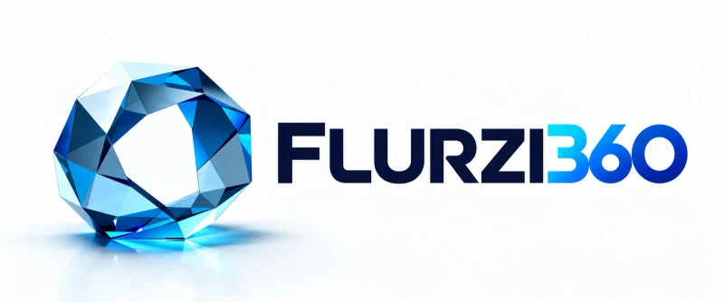

Employee records & documents
The existing workforce platform provides employee records and document storage for business administration.
A global business workforce platform built around HR, compliance and operational oversight.
Version 1 available| Record | Detail | Status |
|---|---|---|
| Right-to-work check | Evidence on file | On file |
| Contract | Renewal approaching | Expiring soon |
| Training record | Exported for audit | On file |
Example record types. Availability depends on the selected plan and jurisdiction.

Flurzi360 is the new identity of SponsorSafe HR. Version 1 remains available through the existing workforce platform, while the broader Flurzi360 business platform continues to develop. The current release focuses on workforce compliance administration and employee record management; wider HR, finance and operational capabilities are still in development and should not be described as live unless confirmed.
Register directly through the existing SponsorSafe HR application while the Flurzi360 identity is introduced. No mandatory demonstration or sales call is required. The intended permanent domain is flurzi360.com, but the current application URLs remain in place until the new environment is deployed and tested. Flurzi360 is business software, not a recruitment or visa sponsorship service.
Current release capabilities. Availability and plan limits are set by the product itself.
The existing workforce platform provides employee records and document storage for business administration.
The current platform advertises expiry reminders, evidence tracking and audit exports. Availability depends on the selected plan and jurisdiction.
Planned product direction. These features are not being advertised as available today.
The expansion includes broader recruitment, onboarding, scheduling and attendance workflows. These are development areas, not a claim of availability in Version 1.
Payroll-related workflows, workforce finance and wider business operations form part of the expanded platform direction. They are still in development.